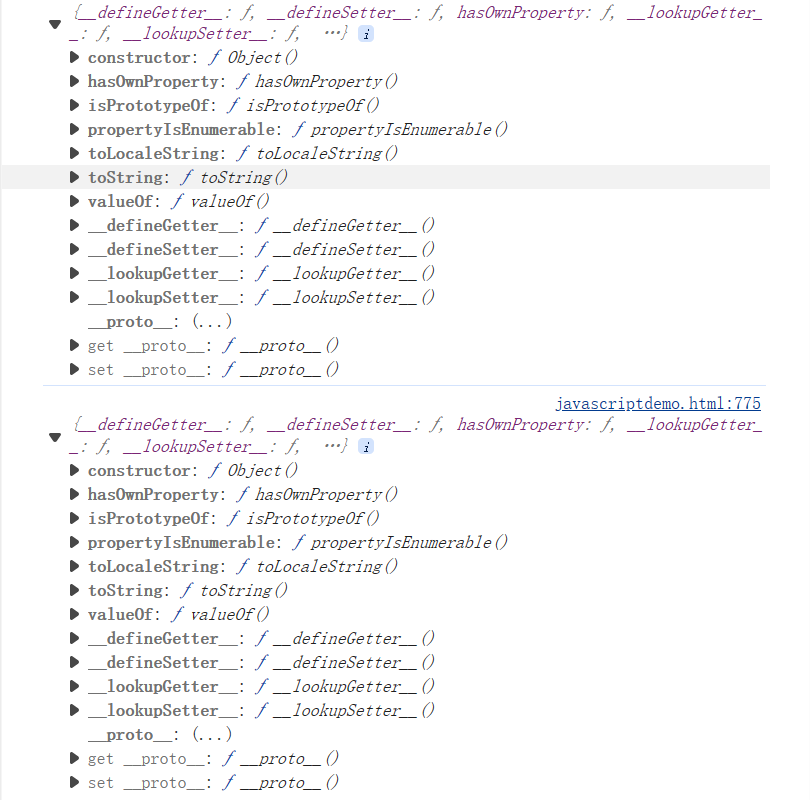

script标签
-
这是没有必要的，因为默认的type就是JavaScript，所以不必显式地把type指定为JavaScript。
NaN
-
例外是NaN这个特殊的Number与所有其他值都不相等，包括它自己：
NaN === NaN:
-
唯一能判断NaN的方法是通过isNaN()函数：
isNaN(NaN):
null和undefined
-
null表示一个“空”的值
undefined仅仅在判断函数参数是否传递的情况下有用。
数组Array
-
数组用[]表示，元素之间用,分隔。
创建数组的方法是通过Array()函数实现
Key-Value键值对
-
JavaScript的对象是一组由键-值组成的无序集合
-
JavaScript对象的键都是字符串类型，值可以是任意数据类型，每个键又称为对象的属性
变量Variable
-
变量在JavaScript中就是用一个变量名表示，变量名是大小写英文、数字、$和_的组合，且不能用数字开头。变量名也不能是JavaScript的关键字
-
声明一个变量用var语句在JavaScript中，使用等号=对变量进行赋值。可以把任意数据类型赋值给变量，同一个变量可以反复赋值，而且可以是不同类型的变量，，只能用var声明一次
-
如果一个变量没有通过var声明就被使用，那么该变量就自动被声明为全局变量
-
使用var声明的变量则不是全局变量，它的范围被限制在该变量被声明的函数体内，同名变量在不同的函数体内互不冲突，ECMA在后续规范中推出了strict模式，在strict模式下运行的JavaScript代码，强制通过var申明变量，未使用var申明变量就使用的，将导致运行错误
多行字符串
-
最新的ES6标准新增了一种多行字符串的表示方法，用反引号`...`表示
-
ES6新增了一种模板字符串，表示方法和上面的多行字符串一样，但是它会自动替换字符串中的变量
Array数组长度变化
-
直接给Array的length赋一个新的值会导致Array大小的变化
-
如果通过索引赋值时，索引超过了范围，同样会引起Array大小的变化
True-False Boolean值
-
JavaScript把null、undefined、0、NaN和空字符串''视为false，其他值一概视为true
For in循环
-
由于Array也是对象，而它的每个元素的索引被视为对象的属性，因此，for ... in循环可以直接循环出Array的索引
-
for ... in对Array的循环得到的是String而不是Number
构造Map Set对象
-
JavaScript的默认对象表示方式{}可以视为其他语言中的Map或Dictionary的数据结构，即一组键值对
-
JavaScript的对象键必须是字符串
Map和Set
-
Map中一个key只能对应一个value
-
Set中key不能重复
Iterable可迭代对象
-
具有iterable类型的集合可以通过新的for ... of循环来遍历
-
ES6标准引入了新的iterable类型，Array、Map和Set都属于iterable类型
-
for ... in循环由于历史遗留问题，它遍历的实际上是对象的属性名称。一个Array数组实际上也是一个对象，它的每个元素的索引被视为一个属性
-
更好的方式是直接使用iterable内置的forEach方法，它接收一个函数，每次迭代就自动回调该函数
函数function定义
var abs = function (x) {
if (x >= 0) {
return x;
} else {
return -x;
}
};
function (x) { ... }是一个匿名函数，它没有函数名。但是，这个匿名函数赋值给了变量abs，所以，通过变量abs就可以调用该函数
注意第二种方式按照完整语法需要在函数体末尾加一个;，表示赋值语句结束
JavaScript允许传入任意个参数而不影响调用，因此传入的参数比定义的参数多也没有问题，虽然函数内部并不需要这些参数
传入的参数比定义的少也没有问题，此时函数的参数将收到undefined，计算结果为NaN
JavaScript还有一个免费赠送的关键字arguments，它只在函数内部起作用，并且永远指向当前函数的调用者传入的所有参数。arguments类似Array但它不是一个Array
利用arguments，你可以获得调用者传入的所有参数。也就是说，即使函数不定义任何参数，还是可以拿到参数的值
ES6标准引入了rest参数，rest参数只能写在最后，前面用...标识，从运行结果可知，传入的多余的参数以数组形式交给变量rest
变量提升
-
JavaScript引擎自动提升了变量的声明，但不会提升变量的赋值
全局作用域
-
JavaScript中，用var申明的变量实际上是有作用域的。如果一个变量在函数体内部申明，则该变量的作用域为整个函数体，在函数体外不可引用该变量
-
不在任何函数内定义的变量就具有全局作用域。实际上，JavaScript默认有一个全局对象window，全局作用域的变量实际上被绑定到window的一个属性
-
顶层函数的定义也被视为一个全局变量，并绑定到window对象
-
JavaScript实际上只有一个全局作用域。任何变量（函数也视为变量），如果没有在当前函数作用域中找到，就会继续往上查找，最后如果在全局作用域中也没有找到，则报ReferenceError错误
局部作用域
-
JavaScript的变量作用域实际上是函数内部，我们在for循环等语句块中是无法定义具有局部作用域的变量的
-
为了解决块级作用域，ES6引入了新的关键字let，用let替代var可以申明一个块级作用域的变量
-
常量
ES6标准引入了新的关键字const来定义常量，const与let都具有块级作用域
解构赋值
-
从ES6开始，JavaScript引入了解构赋值，可以同时对一组变量进行赋值
把一个数组的元素分别赋值给几个变量
var [x, y, z] = ['hello', 'JavaScript', 'ES6'];
解构赋值还可以忽略某些元素
let [, , z] = ['hello', 'JavaScript', 'ES6'];
如果需要从一个对象中取出若干属性，也可以使用解构赋值，便于快速获取对象的指定属性
var {name, age, passport} = person;
对一个对象进行解构赋值时，同样可以直接对嵌套的对象属性进行赋值，只要保证对应的层次是一致的
var {name, address: {city, zip}} = person;
使用解构赋值对对象属性进行赋值时，如果对应的属性不存在，变量将被赋值为undefined，这和引用一个不存在的属性获得undefined是一致的。如果要使用的变量名和属性名不一致
let {name, passport:id} = person;
把passport属性赋值给变量id
解构赋值还可以使用默认值，这样就避免了不存在的属性返回undefined的问题
var {name, single=true} = person;
如果变量已经被声明了，再次赋值的时候，正确的写法也会报语法错误
{x, y} = { name: '小明', x: 100, y: 200};
这是因为JavaScript引擎把{开头的语句当作了块处理，于是=不再合法。解决方法是用小括号括起来
({x, y} = { name: '小明', x: 100, y: 200});
this方法
-
用var that = this;，你就可以放心地在方法内部定义其他函数，而不是把所有语句都堆到一个方法中
-
apply()把参数打包成Array再传入
-
call()把参数按顺序传入
-
对普通函数调用，我们通常把this绑定为null
高阶函数
-
JavaScript的函数其实都指向某个变量。既然变量可以指向函数，函数的参数能接收变量，那么一个函数就可以接收另一个函数作为参数，这种函数就称之为高阶函数
filter过滤函数
-
Array的filter()也接收一个函数。和map()不同的是，filter()把传入的函数依次作用于每个元素，然后根据返回值是true还是false决定保留还是丢弃该元素
-
filter()接收的回调函数，其实可以有多个参数。通常我们仅使用第一个参数，表示Array的某个元素。回调函数还可以接收另外两个参数，表示元素的位置和数组本身
闭包
-
我们在函数中又定义了函数，并且，内部函数可以引用外部函数的参数和局部变量，当返回函数sum时，相关参数和变量都保存在返回的函数中，这种称为“闭包（Closure）”的程序结构拥有极大的威力
-
注意到返回的函数在其定义内部引用了局部变量arr，所以，当一个函数返回了一个函数后，其内部的局部变量还被新函数引用
-
返回的函数并没有立刻执行，而是直到调用了f()才执行
-
返回闭包时牢记的一点就是：返回函数不要引用任何循环变量，或者后续会发生变化的变量
-
如果一定要引用循环变量，方法是再创建一个函数，用该函数的参数绑定循环变量当前的值，无论该循环变量后续如何更改，已绑定到函数参数的值不变
匿名函数
function (x) { return x * x } (3);
由于JavaScript语法解析的问题，会报SyntaxError错误，因此需要用括号把整个函数定义括起来
(function (x) { return x * x }) (3);
通常，一个立即执行的匿名函数可以把函数体拆开，一般这么写
(function (x) {
return x * x;
})(3);
在面向对象的程序设计语言里，比如Java和C++，要在对象内部封装一个私有变量，可以用private修饰一个成员变量。在没有class机制，只有函数的语言里，借助闭包，同样可以封装一个私有变量
在返回的对象中，实现了一个闭包，该闭包携带了局部变量x，并且，从外部代码根本无法访问到变量x。换句话说，闭包就是携带状态的函数，并且它的状态可以完全对外隐藏起来
箭头函数
-
ES6标准新增了一种新的函数：Arrow Function（箭头函数）
-
箭头函数相当于匿名函数，并且简化了函数定义。箭头函数有两种格式，一种像上面的，只包含一个表达式，连{ ... }和return都省略掉了。还有一种可以包含多条语句，这时候就不能省略{ ... }和return
-
如果要返回一个对象，就要注意，如果是单表达式，会报错
// SyntaxError:
x => { foo: x }
因为和函数体的{ ... }有语法冲突
// ok:
x => ({ foo: x })
箭头函数和匿名函数有个明显的区别：箭头函数内部的this是词法作用域，由上下文确定
箭头函数完全修复了this的指向，this总是指向词法作用域，也就是外层调用者obj
由于this在箭头函数中已经按照词法作用域绑定了，所以，用call()或者apply()调用箭头函数时，无法对this进行绑定，即传入的第一个参数被忽略
标签函数
-
标签函数和普通函数的定义区别仅仅在于参数，如果我们想对数据库进行修改，完全可以定义一个标签函数
函数调用可以简化为带标签的模板字符串
Generator生成器
-
generator（生成器）是ES6标准引入的新的数据类型。一个generator看上去像一个函数，但可以返回多次
-
generator和函数不同的是，generator由function*定义（注意多出的*号），并且，除了return语句，还可以用yield返回多次
-
直接调用一个generator和调用函数不一样，function*仅仅是创建了一个generator对象，还没有去执行它
-
调用generator对象有两个方法，一是不断地调用generator对象的next()方法
第二个方法是直接用for ... of循环迭代generator对象，这种方式不需要我们自己判断done
-
因为generator可以在执行过程中多次返回，所以它看上去就像一个可以记住执行状态的函数，利用这一点，写一个generator就可以实现需要用面向对象才能实现的功能
generator还有另一个巨大的好处，就是把异步回调代码变成“同步”代码
包装对象
-
不要使用new Number()、new Boolean()、new String()创建包装对象
-
用parseInt()或parseFloat()来转换任意类型到number
-
用String()来转换任意类型到string，或者直接调用某个对象的toString()方法
-
通常不必把任意类型转换为boolean再判断，因为可以直接写if (myVar) {...}
-
typeof操作符可以判断出number、boolean、string、function和undefined
-
判断Array要使用Array.isArray(arr)
-
判断null请使用myVar === null
-
判断某个全局变量是否存在用typeof window.myVar === 'undefined'
-
函数内部判断某个变量是否存在用typeof myVar === 'undefined'
-
不是任何对象都有toString()方法，null和undefined就没有！确实如此，这两个特殊值要除外，虽然null还伪装成了object类型
-
number对象调用toString()报SyntaxError
123..toString(); // '123', 注意是两个点！
(123).toString(); // '123'
Date日期
-
在JavaScript中，Date对象用来表示日期和时间
当前时间是浏览器从本机操作系统获取的时间，所以不一定准确，因为用户可以把当前时间设定为任何值
-
创建一个指定日期和时间的Date对象
new Date(2015, 5, 19, 20, 15, 30, 123);
第二种创建一个指定日期和时间的方法是解析一个符合ISO 8601格式的字符串
Date.parse('2015-06-24T19:49:22.875+08:00');
返回的不是Date对象，而是一个时间戳。不过有时间戳就可以很容易地把它转换为一个Date
new Date(1435146562875);
Date对象表示的时间总是按浏览器所在时区显示的，不过我们既可以显示本地时间，也可以显示调整后的UTC时间
RegExp正则表达式
-
正则表达式是一种用来匹配字符串的强有力的武器。它的设计思想是用一种描述性的语言来给字符串定义一个规则，凡是符合规则的字符串，我们就认为它“匹配”了，否则，该字符串就是不合法的
-
正则表达式也是用字符串表示的
-
JavaScript有两种方式创建一个正则表达式：
第一种方式是直接通过/正则表达式/写出来，第二种方式是通过new RegExp('正则表达式')创建一个RegExp对象。
-
RegExp对象的test()方法用于测试给定的字符串是否符合条件
-
正则表达式还有提取子串的强大功能。用()表示的就是要提取的分组（Group）
如果正则表达式中定义了组，就可以在RegExp对象上用exec()方法提取出子串来。exec()方法在匹配成功后，会返回一个Array，第一个元素是正则表达式匹配到的整个字符串，后面的字符串表示匹配成功的子串。exec()方法在匹配失败时返回null
贪婪匹配
全局搜索
-
JavaScript的正则表达式特殊的标志，最常用的是g，表示全局匹配
全局匹配可以多次执行exec()方法来搜索一个匹配的字符串。当我们指定g标志后，每次运行exec()，正则表达式本身会更新lastIndex属性，表示上次匹配到的最后索引
-
全局匹配类似搜索，因此不能使用/^...$/，那样只会最多匹配一次
-
正则表达式还可以指定i标志，表示忽略大小写，m标志，表示执行多行匹配
JSON
-
JSON是JavaScript Object Notation的缩写，它是一种数据交换格式
-
JSON实际上是JavaScript的一个子集。在JSON中
-
number：和JavaScript的number完全一致
-
boolean：就是JavaScript的true或false
-
string：就是JavaScript的string
-
null：就是JavaScript的null
-
array：就是JavaScript的Array表示方式――[]
-
object：就是JavaScript的{ ... }表示方式
-
JSON还定死了字符集必须是UTF-8，表示多语言就没有问题了。为了统一解析，JSON的字符串规定必须用双引号""，Object的键也必须用双引号""
序列化
-
如果我们收到一个JSON格式的字符串，只需要把它反序列化成一个JavaScript对象，就可以在JavaScript中直接使用这个对象了
JSON.stringify()
精确控制如何序列化小明，可以给xiaoming定义一个toJSON()的方法，直接返回JSON应该序列化的数据
反序列化
-
拿到一个JSON格式的字符串，我们直接用JSON.parse()把它变成一个JavaScript对象
-
JSON.parse()还可以接收一个函数，用来转换解析出的属性
面向对象编程
-
JavaScript不区分类和实例的概念，而是通过原型（prototype）来实现面向对象编程
-
JavaScript的原型链和Java的Class区别就在，它没有“Class”的概念，所有对象都是实例，所谓继承关系不过是把一个对象的原型指向另一个对象而已
-
在编写JavaScript代码时，不要直接用obj.__proto__去改变一个对象的原型，并且，低版本的IE也无法使用__proto__。Object.create()方法可以传入一个原型对象，并创建一个基于该原型的新对象，但是新对象什么属性都没有
对象obj属性__proto__和方法原型prototype

构造函数
-
直接用{ ... }创建一个对象
-
JavaScript可以用一种构造函数的方法来创建对象
-
普通函数，在JavaScript中，可以用关键字new来调用这个函数，并返回一个对象
如果不写new，这就是一个普通函数，它返回undefined。但是，如果写了new，它就变成了一个构造函数，它绑定的this指向新创建的对象，并默认返回this，也就是说，不需要在最后写return this;
-
用new()创建的对象还从原型上获得了一个constructor属性，它指向函数Student本身
class
-
新的关键字class从ES6开始正式被引入到JavaScript中。class的目的就是让定义类更简单
-
class的定义包含了构造函数constructor和定义在原型对象上的函数（注意没有function关键字）
-
原型继承的中间对象，原型对象的构造函数等等都不需要考虑，直接通过extends来实现
-
ES6引入的class和原有的JavaScript原型继承有什么区别呢？实际上它们没有任何区别，class的作用就是让JavaScript引擎去实现原来需要我们自己编写的原型链代码。简而言之，用class的好处就是极大地简化了原型链代码。
浏览器对象
-
document对象表示当前页面。由于HTML在浏览器中以DOM形式表示为树形结构，document对象就是整个DOM树的根节点
-
要查找DOM树的某个节点，需要从document对象开始查找。最常用的查找是根据ID和Tag Name
-
用document对象提供的getElementById()和getElementsByTagName()可以按ID获得一个DOM节点和按Tag名称获得一组DOM节点
-
document对象还有一个cookie属性，可以获取当前页面的Cookie
Cookie是由服务器发送的key-value标示符。因为HTTP协议是无状态的，但是服务器要区分到底是哪个用户发过来的请求，就可以用Cookie来区分。当一个用户成功登录后，服务器发送一个Cookie给浏览器，例如user=ABC123XYZ(加密的字符串)...，此后，浏览器访问该网站时，会在请求头附上这个Cookie，服务器根据Cookie即可区分出用户
JavaScript可以通过document.cookie读取到当前页面的Cookie
document.cookie; // 'v=123; remember=true; prefer=zh'
服务器在设置Cookie时可以使用httpOnly，设定了httpOnly的Cookie将不能被JavaScript读取。这个行为由浏览器实现，主流浏览器均支持httpOnly选项
操作DOM对象
-
HTML文档被浏览器解析后就是一棵DOM树
-
操作一个DOM节点
-
更新：更新该DOM节点的内容，相当于更新了该DOM节点表示的HTML的内容
-
更新：更新该DOM节点的内容，相当于更新了该DOM节点表示的HTML的内容
-
添加：在该DOM节点下新增一个子节点，相当于动态增加了一个HTML节点
-
删除：将该节点从HTML中删除，相当于删掉了该DOM节点的内容以及它包含的所有子节点
-
在操作一个DOM节点前，我们需要通过各种方式先拿到这个DOM节点。最常用的方法是document.getElementById()和document.getElementsByTagName()，以及CSS选择器document.getElementsByClassName()
由于ID在HTML文档中是唯一的，所以document.getElementById()可以直接定位唯一的一个DOM节点。document.getElementsByTagName()和document.getElementsByClassName()总是返回一组DOM节点。要精确地选择DOM，可以先定位父节点，再从父节点开始选择，以缩小范围
-
使用querySelector()和querySelectorAll()，需要了解selector语法，然后使用条件来获取节点，更加方便
-
我们这里的DOM节点是指Element，但是DOM节点实际上是Node，在HTML中，Node包括Element、Comment、CDATA_SECTION等很多种，以及根节点Document类型，但是，绝大多数时候我们只关心Element，也就是实际控制页面结构的Node，其他类型的Node忽略即可。根节点Document已经自动绑定为全局变量document
更新DOM对象
-
拿到一个DOM节点后，可以直接修改节点的文本
-
修改innerHTML属性，这个方式非常强大，不但可以修改一个DOM节点的文本内容，还可以直接通过HTML片段修改DOM节点内部的子树
用innerHTML时要注意，是否需要写入HTML。如果写入的字符串是通过网络拿到的，要注意对字符编码来避免XSS攻击
-
修改innerText或textContent属性，这样可以自动对字符串进行HTML编码，保证无法设置任何HTML标签
两者的区别在于读取属性时，innerText不返回隐藏元素的文本，而textContent返回所有文本。另外注意IE<9不支持textContent
-
修改CSS操作。DOM节点的style属性对应所有的CSS，可以直接获取或设置
插入DOM对象
-
如果这个DOM节点是空的，直接使用innerHTML就可以修改DOM节点的内容，相当于“插入”了新的DOM节点
-
如果这个DOM节点不是空的，那就不能这么做，因为innerHTML会直接替换掉原来的所有子节点
-
使用appendChild，把一个子节点添加到父节点的最后一个子节点
-
可以使用parentElement.insertBefore(newElement, referenceElement);，子节点会插入到referenceElement之前
使用insertBefore重点是要拿到一个“参考子节点”的引用。很多时候，需要循环一个父节点的所有子节点，可以通过迭代children属性实现
删除DOM对象
-
要删除一个节点，首先要获得该节点本身以及它的父节点，然后，调用父节点的removeChild把自己删掉
操作表单
HTML表单的输入控件主要有
-
文本框，对应的<input type="text">，用于输入文本
-
口令框，对应的<input type="password">，用于输入口令
-
单选框，对应的<input type="radio">，用于选择一项
-
复选框，对应的<input type="checkbox">，用于选择多项
-
下拉框，对应的<select>，用于选择一项
-
隐藏文本，对应的<input type="hidden">，用户不可见，但表单提交时会把隐藏文本发送到服务器
提交表单
JavaScript可以处理表单的提交（AJAX方式在后面章节介绍）
-
通过<form>元素的submit()方法提交一个表单
这种方式的缺点是扰乱了浏览器对form的正常提交。浏览器默认点击<button type="submit">时提交表单，或者用户在最后一个输入框按回车键
-
响应<form>本身的onsubmit事件，在提交form时作修改
在检查和修改<input>时，要充分利用来传递数据
操作文件
-
在HTML表单中，可以上传文件的唯一控件就是<input type="file">
当一个表单包含<input type="file">时，表单的enctype必须指定为multipart/form-data，method必须指定为post，浏览器才能正确编码并以multipart/form-data格式发送表单的数据
出于安全考虑，浏览器只允许用户点击<input type="file">来选择本地文件，用JavaScript对<input type="file">的value赋值是没有任何效果的。当用户选择了上传某个文件后，JavaScript也无法获得该文件的真实路径
File API
JavaScript对用户上传的文件操作非常有限，尤其是无法读取文件内容，使得很多需要操作文件的网页不得不用Flash这样的第三方插件来实现
-
HTML5的File API提供了File和FileReader两个主要对象，可以获得文件信息并读取文件
回调
-
在JavaScript中，浏览器的JavaScript执行引擎在执行JavaScript代码时，总是以单线程模式执行，也就是说，任何时候，JavaScript代码都不可能同时有多于1个线程在执行
-
在JavaScript中，执行多任务实际上都是异步调用
AJAX
-
一次HTTP请求对应一个页面
-
如果要让用户留在当前页面中，同时发出新的HTTP请求，就必须用JavaScript发送这个新请求，接收到数据后，再用JavaScript更新页面
-
AJAX请求是异步执行的，也就是说，要通过回调函数获得响应
-
在现代浏览器上写AJAX主要依靠XMLHttpRequest对象
-
通过检测window对象是否有XMLHttpRequest属性来确定浏览器是否支持标准的XMLHttpRequest
-
XMPHttpRequest
-
创建了XMLHttpRequest对象后，要先设置onreadystatechange的回调函数。在回调函数中，通常我们只需通过readyState === 4判断请求是否完成，如果已完成，再根据status === 200判断是否是一个成功的响应
-
XMLHttpRequest对象的open()方法有3个参数，第一个参数指定是GET还是POST，第二个参数指定URL地址，第三个参数指定是否使用异步，默认是true，所以不用写
千万不要把第三个参数指定为false，否则浏览器将停止响应，直到AJAX请求完成。如果这个请求耗时10秒，那么10秒内你会发现浏览器处于“假死”状态
-
最后调用send()方法才真正发送请求。GET请求不需要参数，POST请求需要把body部分以字符串或者FormData对象传进去
-
现代浏览器还提供了原生支持的Fetch API，以Promise方式提供
安全限制
-
因为浏览器的同源策略导致的。默认情况下，JavaScript在发送AJAX请求时，URL的域名必须和当前页面完全一致
-
完全一致的意思是，域名要相同（www.example.com和example.com不同），协议要相同（http和https不同），端口号要相同（默认是:80端口，它和:8080就不同）
-
解决跨域CORS问题
-
通过Flash插件发送HTTP请求，这种方式可以绕过浏览器的安全限制，但必须安装Flash，并且跟Flash交互
-
通过在同源域名下架设一个代理服务器来转发，JavaScript负责把请求发送到代理服务器
-
JSONP，它有个限制，只能用GET请求，并且要求返回JavaScript。这种方式跨域实际上是利用了浏览器允许跨域引用JavaScript资源
JSONP通常以函数调用的形式返回
CORS
-
CORS全称Cross-Origin Resource Sharing，是HTML5规范定义的如何跨域访问资源
-
Origin表示本域，也就是浏览器当前页面的域。当JavaScript向外域（如sina.com）发起请求后，浏览器收到响应后，首先检查Access-Control-Allow-Origin是否包含本域，如果是，则此次跨域请求成功，如果不是，则请求失败，JavaScript将无法获取到响应的任何数据
-
跨域能否成功，取决于对方服务器是否愿意给你设置一个正确的Access-Control-Allow-Origin，决定权始终在对方手中
这种跨域请求，称之为“简单请求”。简单请求包括GET、HEAD和POST（POST的Content-Type类型 仅限application/x-www-form-urlencoded、multipart/form-data和text/plain），并且不能出现任何自定义头
-
对于PUT、DELETE以及其他类型如application/json的POST请求，在发送AJAX请求之前，浏览器会先发送一个OPTIONS请求（称为preflighted请求）到这个URL上，询问目标服务器是否接受
浏览器确认服务器响应的Access-Control-Allow-Methods头确实包含将要发送的AJAX请求的Method，才会继续发送AJAX，否则，抛出一个错误
由于以POST、PUT方式传送JSON格式的数据在REST中很常见，所以要跨域正确处理POST和PUT请求，服务器端必须正确响应OPTIONS请求
Promise
-
在JavaScript的世界中，所有代码都是单线程执行的
-
JavaScript的所有网络操作，浏览器事件，都必须是异步执行。异步执行可以用回调函数实现
-
“承诺将来会执行”的对象在JavaScript中称为Promise对象
-
除了串行执行若干异步任务外，Promise还可以并行执行异步任务，用Promise.all()实现
-
有些时候，多个异步任务是为了容错，用Promise.race()实现
错误处理
-
catch和finally可以不必都出现
-
JavaScript有一个标准的Error对象表示错误，还有从Error派生的TypeError、ReferenceError等错误对象。我们在处理错误时，可以通过catch(e)捕获的变量e访问错误对象
-
程序也可以主动抛出一个错误，让执行流程直接跳转到catch块。抛出错误使用throw语句
-
实际上，JavaScript允许抛出任意对象，包括数字、字符串。但是，最好还是抛出一个Error对象
错误传播
-
如果在一个函数内部发生了错误，它自身没有捕获，错误就会被抛到外层调用函数，如果外层函数也没有捕获，该错误会一直沿着函数调用链向上抛出，直到被JavaScript引擎捕获，代码终止执行
异步错误处理
-
JavaScript引擎是一个事件驱动的执行引擎，代码总是以单线程执行，而回调函数的执行需要等到下一个满足条件的事件出现后，才会被执行
-
涉及到异步代码，无法在调用时捕获，原因就是在捕获的当时，回调函数并未执行
jQuery
-
使用jQuery只需要在页面的引入jQuery文件
$符号
-
$是著名的jQuery符号。实际上，jQuery把所有功能全部封装在一个全局变量jQuery中，而$也是一个合法的变量名，它是变量jQuery的别名
-
$本质上就是一个函数，但是函数也是对象，于是$除了可以直接调用外，也可以有很多其他属性
-
如果$这个变量不幸地被占用了，而且还不能改，那我们就只能让jQuery把$变量交出来，然后就只能使用jQuery这个变量
原理是jQuery在占用$之前，先在内部保存了原来的$,调用jQuery.noConflict()时会把原来保存的变量还原
选择器
-
选择器是jQuery的核心
jQuery的选择器就是帮助我们快速定位到一个或多个DOM节点
按属性查找
-
var email = $('[name=email]'); // 找出
var passwordInput = $('[type=password]'); // 找出
var a = $('[items="A B"]'); // 找出
当属性的值包含空格等特殊字符时，需要用双引号括起来
-
按属性查找还可以使用前缀查找或者后缀查找
var icons = $('[name^=icon]'); // 找出所有name属性值以icon开头的DOM
var names = $('[name$=with]'); // 找出所有name属性值以with结尾的DOM
组合查找
多项选择器
-
多项选择器就是把多个选择器用,组合起来一块选
选出来的元素是按照它们在HTML中出现的顺序排列的，而且不会有重复元素
层级选择器
DOM的结构就是层级结构，所以我们经常要根据层级关系进行选择
-
层级选择器
-
如果两个DOM元素具有层级关系，层级之间用空格隔开
-
子选择器
-
子选择器
$('parent>child')类似层级选择器
限定了层级关系必须是父子关系，就是节点必须是节点的直属子节点
-
过滤器（Filter）
$('ul.lang li:first-child'); // 仅选出第一个元素
$('ul.lang li:last-child'); // 仅选出最后一个元素
$('ul.lang li:nth-child(2)'); // 选出第N个元素，N从1开始
$('ul.lang li:nth-child(even)'); // 选出序号为偶数的元素
$('ul.lang li:nth-child(odd)'); // 选出序号为奇数的元素
-
表单相关
针对表单元素，jQuery还有一组特殊的选择器
-
:input：可以选择<input>，<textarea>，<select>和<button></button>
-
:file：可以选择<input type="file">，和input[type=file]一样
-
:checkbox：可以选择复选框，和input[type=checkbox]一样
-
:radio：可以选择单选框，和input[type=radio]一样
-
:focus：可以选择当前输入焦点的元素，例如把光标放到一个<input>上，用$('input:focus')就可以选出
-
:checked：选择当前勾上的单选框和复选框，用这个选择器可以立刻获得用户选择的项目，如$('input[type=radio]:checked')
-
:enabled：可以选择可以正常输入的<input>、<select> 等，也就是没有灰掉的输入
-
:disabled：和:enabled正好相反，选择那些不能输入的
查找和过滤
查找
-
用find()查找
-
如果要从当前节点开始向上查找，使用parent()方法
-
对于位于同一层级的节点，可以通过next()和prev()方法
过滤
-
filter()方法可以过滤掉不符合选择器条件的节点
-
传入一个函数，要特别注意函数内部的this被绑定为DOM对象，不是jQuery对象
-
map()方法把一个jQuery对象包含的若干DOM节点转化为其他对象
-
一个jQuery对象如果包含了不止一个DOM节点，first()、last()和slice()方法可以返回一个新的jQuery对象，把不需要的DOM节点去掉
操作DOM
修改Text和HTML
-
jQuery对象的text()和html()方法分别获取节点的文本和原始HTML文本
-
jQuery的API设计非常巧妙：无参数调用text()是获取文本，传入参数就变成设置文本，HTML也是类似操作
-
jQuery对象的另一个好处是我们可以执行一个操作，作用在对应的一组DOM节点上。即使选择器没有返回任何DOM节点，调用jQuery对象的方法仍然不会报错
修改CSS
-
调用jQuery对象的css('name', 'value')方法
-
jQuery对象的所有方法都返回一个jQuery对象（可能是新的也可能是自身），我们可以进行链式调用
-
css()方法将作用于DOM节点的style属性，具有最高优先级
-
如果要修改class属性
-
div.hasClass()
-
div.addClass()
-
div.removeClass()
显示和隐藏DOM
-
隐藏一个DOM，我们可以设置CSS的display属性为none，利用css()方法就可以实现
-
显示这个DOM就需要恢复原有的display属性，这就得先记下来原有的display属性到底是block还是inline还是别的值
-
jQuery直接提供show()和hide()方法
-
隐藏DOM节点并未改变DOM树的结构，它只影响DOM节点的显示。这和删除DOM节点是不同的
获取DOM信息
操作表单
-
对于表单元素，jQuery对象统一提供val()方法获取和设置对应的value属性
修改DOM结构
-
jQuery，我们就专注于操作jQuery对象本身，底层的DOM操作由jQuery完成
添加DOM
-
添加新的DOM节点
-
jQuery的html()暴力方法
-
append()方法
接受字符串，append()还可以传入原始的DOM对象，jQuery对象和函数对象
传入函数时，要求返回一个字符串、DOM对象或者jQuery对象。因为jQuery的append()可能作用于一组DOM节点，只有传入函数才能针对每个DOM生成不同的子节点
-
append()把DOM添加到最后，prepend()则把DOM添加到最前
-
如果要添加的DOM节点已经存在于HTML文档中，它会首先从文档移除，然后再添加，用append()，你可以移动一个DOM节点
-
如果要把新节点插入到指定位置，可以先定位到JavaScript，然后用after()方法
-
同级节点可以用after()或者before()方法
删除DOM
-
删除DOM节点，拿到jQuery对象后直接调用remove()方法就可以了。如果jQuery对象包含若干DOM节点，实际上可以一次删除多个DOM节点
事件
-
因为JavaScript在浏览器中以单线程模式运行，页面加载后，一旦页面上所有的JavaScript代码被执行完后，就只能依赖触发事件来执行JavaScript代码
-
浏览器在接收到用户的鼠标或键盘输入后，会自动在对应的DOM节点上触发相应的事件。如果该节点已经绑定了对应的JavaScript处理函数，该函数就会自动调用
事件参数
-
所有事件都会传入Event对象作为参数，可以从Event对象上获取到更多的信息
取消绑定
-
一个已被绑定的事件可以解除绑定，通过off('click', function)实现
-
为了实现移除效果，可以使用off('click')一次性移除已绑定的click事件的所有处理函数
-
无参数调用off()一次性移除已绑定的所有类型的事件处理函数
事件触发条件
-
用JavaScript代码将不会触发事件
我们希望用代码触发事件，可以直接调用无参数的方法来触发该事件
浏览器安全限制
-
在浏览器中，有些JavaScript代码只有在用户触发下才能执行
Example事件
动画
-
直接以无参数形式调用show()和hide()，会显示和隐藏DOM元素
只要传递一个时间参数进去，就变成了动画，时间以毫秒为单位，但也可以是'slow'，'fast'这些字符串
-
toggle()方法则根据当前状态决定是show()还是hide()
-
show()和hide()是从左上角逐渐展开或收缩的，而slideUp()和slideDown()则是在垂直方向逐渐展开或收缩的
slideUp()把一个可见的DOM元素收起来，效果跟拉上窗帘似的，slideDown()相反，而slideToggle()则根据元素是否可见来决定下一步动作
-
fadeIn()和fadeOut()的动画效果是淡入淡出，也就是通过不断设置DOM元素的opacity属性来实现，而fadeToggle()则根据元素是否可见来决定下一步动作
-
animate()，它可以实现任意动画效果，我们需要传入的参数就是DOM元素最终的CSS状态和时间，jQuery在时间段内不断调整CSS直到达到我们设定的值
animate()还可以再传入一个函数，当动画结束时，该函数将被调用
串行动画
-
jQuery的动画效果还可以串行执行，通过delay()方法还可以实现暂停
因为动画需要执行一段时间，所以jQuery必须不断返回新的Promise对象才能后续执行操作
-
jQuery也没有实现对background-color的动画效果，用animate()设置background-color也没有效果。这种情况下可以使用CSS3的transition实现动画效果
AJAX
-
用jQuery的相关对象来处理AJAX
-
jQuery在全局对象jQuery（也就是$）绑定了ajax()函数，可以处理AJAX请求
ajax(url, settings)函数需要接收一个URL和一个可选的settings对象
async：是否异步执行AJAX请求，默认为<code>true</code>，千万不要指定为<code>false</code>；
method：发送的Method，缺省为<code>'GET'</code>，可指定为<code>'POST'</code>、<code>'PUT'</code>等；
contentType：发送POST请求的格式，默认值为<code>'application/x-www-form-urlencoded; charset=UTF-8'</code>，也可以指定为<code>text/plain</code>、<code>application/json</code>；
data：发送的数据，可以是字符串、数组或object。如果是GET请求，data将被转换成query附加到URL上，如果是POST请求，根据contentType把data序列化成合适的格式；
headers：发送的额外的HTTP头，必须是一个object；
dataType：接收的数据格式，可以指定为<code>'html'</code>、<code>'xml'</code>、<code>'json'</code>、<code>'text'</code>等，缺省情况下根据响应的<code>Content-Type<code>猜测。
dataType：接收的数据格式，可以指定为<code>'html'</code>、<code>'xml'</code>、<code>'json'</code>、<code>'text'</code>等，缺省情况下根据响应的<code>Content-Type/code>猜测。
-
jQuery的jqXHR对象类似一个Promise对象，我们可以用链式写法来处理各种回调
AJAX get请求
-
jQuery提供了get()方法
-
第二个参数如果是object，jQuery自动把它变成query string然后加到URL后面
这样我们就不用关心如何用URL编码并构造一个query string了
AJAX post请求
-
post()和get()类似，但是传入的第二个参数默认被序列化为application/x-www-form-urlencoded
-
实际构造的数据作为POST的body被发送
getJSON
-
由于JSON用得越来越普遍，所以jQuery也提供了getJSON()方法来快速通过GET获取一个JSON对象
安全限制
-
jQuery的AJAX完全封装的是JavaScript的AJAX操作，所以它的安全限制和前面讲的用JavaScript写AJAX完全一样
-
需要使用JSONP，可以在ajax()中设置jsonp: 'callback'，让jQuery实现JSONP跨域加载数据
自定义jQuery
编写jQuery插件
-
给jQuery对象绑定一个新方法是通过扩展$.fn对象实现的
$.fn.highlight1 = function () {
// this已绑定为当前jQuery对象:
this.css('backgroundColor', '#fffceb').css('color', '#d85030');
return this;
}
注意到函数内部的this在调用时被绑定为jQuery对象，所以函数内部代码可以正常调用所有jQuery对象的方法
最后要return this，jQuery对象支持链式操作，我们自己写的扩展方法也要能继续链式下去
默认值的处理
-
用一个简单的&&和||短路操作符，总能得到一个有效的值
-
使用jQuery提供的辅助方法$.extend(target, obj1, obj2, ...)，它把多个object对象的属性合并到第一个target对象中，遇到同名属性，总是使用靠后的对象的值，也就是越往后优先级越高
编写一个jQuery插件的原则
-
给$.fn绑定函数，实现插件的代码逻辑；
-
插件函数最后要return this;以支持链式调用；
-
插件函数要有默认值，绑定在$.fn..defaults上；
-
用户在调用时可传入设定值以便覆盖默认值。
针对特定元素的扩展
-
jQuery对象的有些方法只能作用在特定DOM元素上，我们编写的扩展只能针对某些类型的DOM元素
jQuery的选择器支持filter()方法来过滤，我们可以借助这个方法来实现针对特定元素的扩展
underscore
-
JavaScript是函数式编程语言，支持高阶函数和闭包
-
jQuery统一了不同浏览器之间的DOM操作的差异，让我们可以简单地对DOM进行操作，underscore则提供了一套完善的函数式编程的接口，让我们更方便地在JavaScript中实现函数式编程
-
underscore会把自身绑定到唯一的全局变量_上，这也是为啥它的名字叫underscore的原因
Collections
-
underscore为集合类对象提供了一致的接口。集合类是指Array和Object，暂不支持Map和Set
map/filter
-
underscore的map()和filter()可以作用于Object。当作用于Object时，传入的函数为function (value, key)，第一个参数接收value，第二个参数接收key
-
_.map操作的返回结果是Array
_.mapObject操作的返回结果是Object
every/some
-
当集合的所有元素都满足条件时，_.every()函数返回true，当集合的至少一个元素满足条件时，_.some()函数返回true
max/min
groupBy
-
groupBy()把集合的元素按照key归类，key由传入的函数返回
shuffle/sample
-
shuffle()用洗牌算法随机打乱一个集合
sample()则是随机选择一个或多个元素
Array
first/last
flatten
-
flatten()接收一个Array，无论这个Array里面嵌套了多少个Array，flatten()最后都把它们变成一个一维数组
zip/unzip
-
zip()把两个或多个数组的所有元素按索引对齐，然后按索引合并成新数组
unzip()则是反过来
object
range
-
range()让你快速生成一个序列，不再需要用for循环实现
Functions
-
因为underscore本来就是为了充分发挥JavaScript的函数式编程特性，所以也提供了大量JavaScript本身没有的高阶函数
bind
-
当用一个变量fn指向一个对象的方法时，直接调用fn()是不行的，因为丢失了this对象的引用。用bind可以修复这个问题
partial
-
partial()就是为一个函数创建偏函数
-
如果我们不想固定第一个参数，想固定第二个参数，可以用_作占位符，固定住第二个参数
创建偏函数的目的是将原函数的某些参数固定住，可以降低新函数调用的难度
memorize
once
delay
-
delay()可以让一个函数延迟执行，效果和setTimeout()是一样的
Objects
underscore也提供了大量针对Object的函数
keys/allKeys
-
keys()可以非常方便地返回一个object自身所有的key，但不包含从原型链继承下来的
-
allKeys()除了object自身的key，还包含从原型链继承下来的
values
-
values()返回object自身但不包含原型链继承的所有值
mapObject
-
mapObject()就是针对object的map版本
invert
-
invert()把object的每个key-value来个交换，key变成value，value变成key
extend/extendOwn
-
extend()把多个object的key-value合并到第一个object并返回
注意：如果有相同的key，后面的object的value将覆盖前面的object的value
-
extendOwn()和extend()类似，但获取属性时忽略从原型链继承下来的属性
clone
-
如果我们要复制一个object对象，就可以用clone()方法，它会把原有对象的所有属性都复制到新的对象中
注意，clone()是“浅复制”。所谓“浅复制”就是说，两个对象相同的key所引用的value其实是同一对象
isEqual
-
isEqual()对两个object进行深度比较，如果内容完全相同，则返回true
isEqual()其实对Array也可以比较
Chaining
jQuery支持链式调用
-
underscore提供了把对象包装成能进行链式调用的方法，就是chain()函数